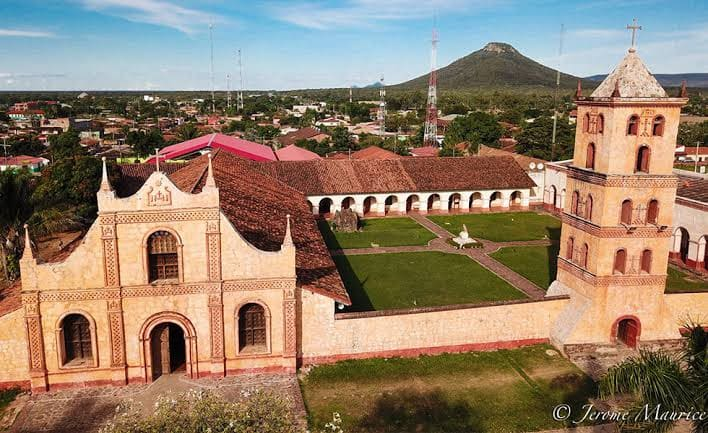
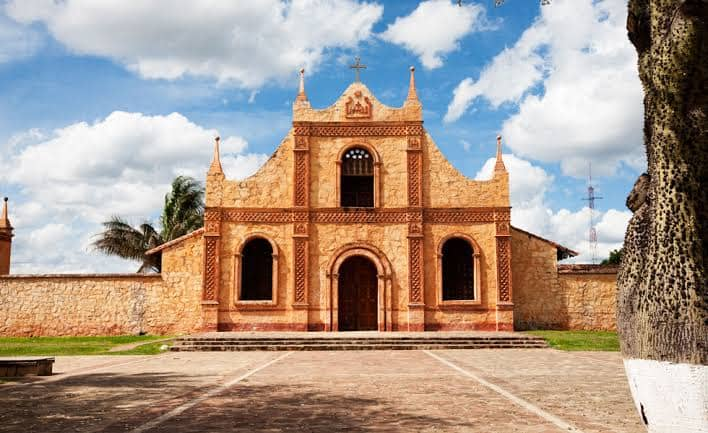
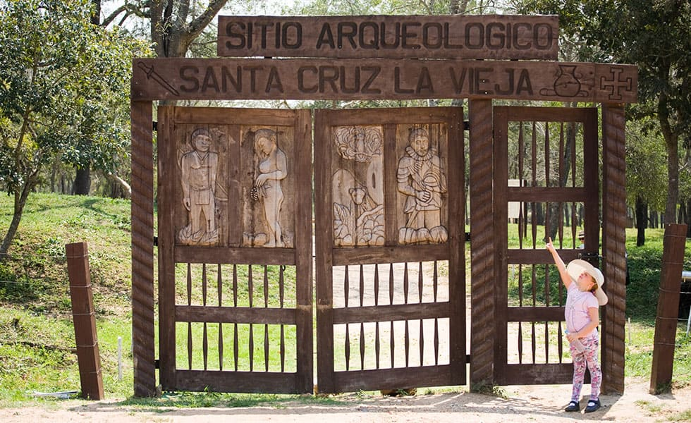
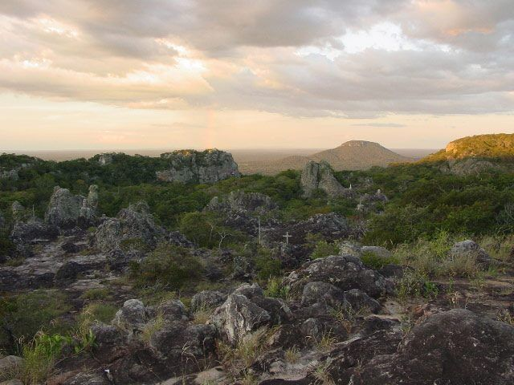
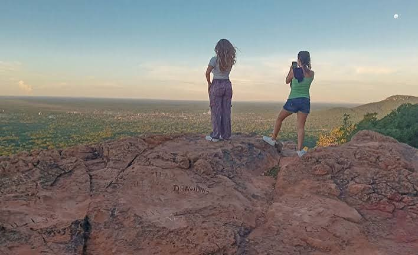

Más vendido
Conjunto Misional Jesuítico
Explora el único conjunto misional construido enteramente en piedra de la Chiquitania, declarado Patrimonio de la Humanidad por la UNESCO.
San José de Chiquitos es un tesoro vivo. Aquí se fundó la primera Santa Cruz de la Sierra y se levanta el único Conjunto Misional Jesuítico construido enteramente en piedra.


Más vendido
Explora el único conjunto misional construido enteramente en piedra de la Chiquitania, declarado Patrimonio de la Humanidad por la UNESCO.

Descubre el sitio arqueológico donde Ñuflo de Cháves fundó la primera Santa Cruz de la Sierra en 1561, rodeado de bosque seco chiquitano.

Recorre un singular paisaje de formaciones rocosas milenarias talladas por el tiempo, ideal para caminatas panorámicas.

Asciende por la Serranía El Riquío hasta el mirador y luego relájate en las piscinas del balneario rodeado de vegetación.